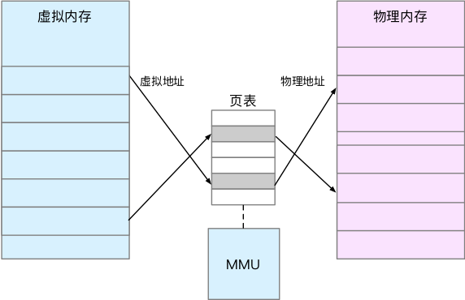

linux性能优化
CPU平均负载
平均负载是指单位时间内，系统处于可运行状态和不可中断状态的平均进程数，也就是平均活跃进程数，它和CPU使用率并没直接关系。
- 可运行状态的进程，是指正在使用CPU或者正在等待CPU的进程，也就是我们常用ps命令看到的，处于R状态（Running或Runnable）的进程。
- 不可中断状态的进程是正处于内核态关键流程中的进程，并且这些流程是不可打断的，比如最常见的是等待硬件设备的I/O响应，也就是我们在ps命令中看到的D状态（Uninterruptible Sleep，也称为Disk Sleep）的进程。
CPU平均负载与CPU使用率
- CPU密集型进程，使用大量CPU会导致平均负载升高，此时这两者是一致的；
- I/O密集型进程，等待I/O也会导致平均负载升高，但CPU使用率不一定很高；
- 大量等待CPU的进程调度也会导致平均负载升高，此时的CPU使用率也会比较高。
CPU上下文切换
CPU寄存器，是CPU内置的容量小、但速度极快的内存。程序计数器，则是用来存储CPU正在执行的指令位置、或者即将执行的下一条指令的位置。它们都是CPU在运行任何任务前，必须依赖的环境，因此也被叫做CPU上下文。
CPU上下文切换，就是先把前一个任务的CPU上下文（也就是CPU寄存器和程序计数器）保存起来，然后加载新任务的上下文到这些寄存器和程序计数器，最后再跳转到程序计数器所指的位置，运行新任务。
进程上下文切换
内核空间（Ring 0）具有最高权限，可以直接访问所有资源；
用户空间（Ring 3）只能访问受限资源，不能直接访问内存等硬件设备，必须通过系统调用陷入到内核中，才能访问这些特权资源。
进程在用户空间运行时，被称为用户态，而陷入内核空间的时候，被称为进程的内核态。
进程上下文切换，是指从一个进程切换到另一个进程运行。而系统调用过程中一直是同一个进程在运行。系统调用的过程通常称为特权模式切换，而不是上下文切换。
进程上下文切换跟系统调用的区别：进程是由内核来管理和调度的，进程的切换只能发生在内核态。所以，进程的上下文不仅包括了虚拟内存、栈、全局变量等用户空间的资源，还包括了内核堆栈、寄存器等内核空间的状态。因此，进程的上下文切换就比系统调用时多了一步：在保存当前进程的内核状态和CPU寄存器之前，需要先把该进程的虚拟内存、栈等保存下来；而加载了下一进程的内核态后，还需要刷新进程的虚拟内存和用户栈。
进程发生调度的场景：
- 为了保证所有进程可以得到公平调度，CPU时间被划分为一段段的时间片，这些时间片再被轮流分配给各个进程。这样，当某个进程的时间片耗尽了，就会被系统挂起，切换到其它正在等待CPU的进程运行。
- 进程在系统资源不足（比如内存不足）时，要等到资源满足后才可以运行，这个时候进程也会被挂起，并由系统调度其他进程运行。
- 当进程通过睡眠函数sleep将自己主动挂起时，自然也会重新调度。
- 当有优先级更高的进程运行时，为了保证高优先级进程的运行，当前进程会被挂起，由高优先级进程来运行。
- 发生硬件中断时，CPU上的进程会被中断挂起，转而执行内核中的中断服务程序。
线程上下文切换
进程只有一个线程时，可以认为进程就等于线程；当进程拥有多个线程时，这些线程会共享相同的虚拟内存和全局变量等资源，这些资源在上下文切换时，不需要修改的；线程也有自己的私有数据，比如栈和寄存器等，这些上下文切换时也是需要保存的。
线程上下文切换分两种情况：
- 前后两个线程属于不同进程。此时，因为资源不共享，所以切换过程就跟进程上下文切换是一样；
- 前后两个线程属于同一个进程。此时，因为虚拟内存是共享的，所以在切换时，虚拟内存这些资源就保持不动，只需要切换线程的私有数据、寄存器等不共享的数据。
中断上下文切换
为了快速响应硬件的事件，中断处理会打断进程的正常调度和运行。中断上下文切换不涉及到进程的用户态。对于同一个CPU来说，中断处理比进程拥有更高的优先级。
自愿上下文切换（voluntary context switches），是指进程无法获取所需资源，导致上下文切换。比如说，I/O、内存等系统资源不足时，就会发生自愿上下文切换。
非自愿上下文切换（non voluntary context switches）， 则是指进程由于时间片已到等原因，被系统强制调度，进而发生的上下文切换。比如说，大量进程都在争抢CPU时，就容易发生非自愿上下文切换。
重调度中断（RES），这个中断类型表示，唤醒空闲状态的CPU来调度新的任务运行。这是多处理器系统（SMP）中， 调度器用来分散任务到不同CPU的机制，通常也被称为处理器间中断（Inter-Processor Interrupts，IPI）。
- 自愿上下文切换变多了，说明进程在等待资源，有可能发生了I/O等其他问题；
- 非自愿上下文切换蛮多了，说明进程都在被强制调度，也就是都在争抢CPU，说明CPU的确成了瓶颈；
- 中断次数变多了，说明CPU被中断处理程序占用，还需要通过查看/proc/interrupts文件来分析具体的中断类型。
CPU使用率
CPU使用率，就是除了空闲时间外的其他时间占总CPU时间的百分比。
perf工具
$ perf top
Samples: 833 of event 'cpu-clock', Event count (approx.): 97742399
Overhead Shared Object Symbol
7.28% perf [.] 0x00000000001f78a4
4.72% [kernel] [k] vsnprintf
4.32% [kernel] [k] module_get_kallsym
3.65% [kernel] [k] _raw_spin_unlock_irqrestore
...
输出结果中，第一行包含三个数据，分别 是采样数（Samples）、事件类型（event）和事件总数量（Event count）。
Overhead，是该符号的性能事件在所有采样中的比例，用百分比来表示。
Shared，是该函数或指令所在的动态共享对象（Dynamic Shared Object），如内核、进程名、动态链接库名、内核模块名等。
Object，是动态共享对象的类型。比如[.]表示用户空间的可执行程序、或者动态链接库，而[k]则表示内核空间。
Symbol，是符号名，也就是函数名。当函数名未知时，用十六进制的地址来表示。
perf record，提供了保存数据的功能。
perf report，解析保存后的数据。
碰到CPU使用率很高，但找不到高CPU的应用时，首先要想到的有可能是短时应用导致的问题，有可能是下面两种情况：
- 应用里直接调用了其他二进制程序，这些程序通常运行时间比较短，通过top等工具也不容易发现。
- 应用本身在不停地崩溃重启，而启动过程的资源初始化，很可能占用相当多的CPU。
进程的状态
- R是Running或Runnable的缩写，表示进程在CPU的就绪队列中，正在运行或正在等待运行。
- D是Disk sleep的缩写，也就是不可中断状态睡眠（Uninterruptible Sleep），一般表示进程正在跟硬件交互，并且交互过程不允许被其他进程或中断打断。
- Z是Zombie的缩写，它表示僵尸进程，也就是进程实际上已经结束了，但是父进程还没有回收它的资源（比如进程的描述符、PID等）。
- S是Interruptible Sleep的缩写，也就是可中断状态睡眠，表示进程因为某个事件而被系统挂起。当进程等待的事件发生时，它会被唤醒并进入R状态。
- I是Idle的缩写，也就是空闲状态，用在不可中断睡眠的内核线程上。前面说了，硬件交互导致的不可中断进程用D表示，但对某些内核线程来说，它们有可能实际并没有任何负载，用Idle正是为了区分这种情况。要注意，D状态的进程会导致平均负载升高，I状态的进程却不会。
- T或者t，也就是Stopped或Traced的缩写，表示进程处于暂停或者跟踪状态。
- X也就是Dead的缩写，表示进程已经消亡，所以你不会在top或者ps命令中看到它。
软中断
中断是一种异步事件处理机制，可以提高系统的并发处理能力。
中断处理过程分成了两个阶段，也就是上半部和下半部：
上半部用来快速处理中断，它在中断禁止模式下运行，主要处理跟硬件紧密相关或时间敏感的工作。下半部用来延迟处理上半部未完成的工作，通常以内核线程的方式运行。
以网卡接收数据包为例：
网卡接收到数据包后，会通过硬件中断的方式，通知内核有新的数据到了。这时，内核应该调用中断处理程序来响应它。
对于上半部来说，既然是快速处理，其实就是把网卡中的数据读到内存中，然后更新一下硬件寄存器的状态（表示数据已经读好了），最后再发送一个软中断信号，通知下半部进一步处理。
而下半部被软中断唤醒后，需要从内存中找到网络数据，再按照网络协议，对数据进行逐层解析和处理，直到把它送给应用程序。
- 上半部直接处理硬件请求，也就是我们常说的硬中断，特点是快速执行。
- 下半部则是由内核触发，也就是我们常说的软中断，特点是延迟执行。
查看软中断和内核线程
/proc/softirqs提供了软中断的运行情况。/proc/interrupts提供了硬中断的运行情况。
根据指标找工具
| 性能指标 | 工具 | 说明 |
|---|---|---|
| 平均负载 | uptime, top | uptime查看CPU负载;top提供了更全的指标 |
| 系统整体CPU使用率 | vmstat, mpstat, top, sar, /proc/stat | top、vmstat、mpstat只可以动态查看，而sar还可以记录历史数据，/proc/stat是其他性能工具的数据来源 |
| 进程CPU使用率 | top, pidstat, ps, htop, atop | top和ps可以按CPU使用率给进程排序，而pidstat只显示实际用了CPU的进程，htop和atop以不同颜色显示更直观 |
| 系统上下文切换 | vmstat | 除了上下文切换次数，还提供运行状态和不可以中断状态进程的数量 |
| 进程上下文切换 | pidstat | 注意加上-w选项 |
| 软中断 | top, /proc/softirqs, mpstat | top提供软中断CPU使用率，而/proc/softirqs和mpstat提供了各种软中断在每个CPU上的运行次数 |
| 硬中断 | vmstat, /proc/interrupts | vmstat提供总的中断次数，而/proc/interrupts提供各种中断在每个CPU运行的累积数 |
| 网络 | dstat, sar, tcpdump | dstat和sar提供总的网络接收和发送情况，而tcpdump则是动态抓取正在进行的网络通讯 |
| I/O | dstat, sar | dstat和sar进了提供了I/O的整体情况 |
| CPU个数 | /proc/cpuinfo, lscpu | lscpu更直观 |
| 事件剖析 | perf, execsnoop | perf可以用来分析CPU缓存以及内核调用链，execsnoop用来监控短时进程 |
根据工具查看指标（CPU性能）
| 性能工具 | CPU性能指标 |
|---|---|
| uptime | 平均负载 |
| top | 平均负载、运行队列、整体的CPU使用率以及每个进程的状态和CPU使用率 |
| htop | top增强版，以不同颜色区分不同类型的进程，更直观 |
| atop | CPU、内存、磁盘和网络等各种资源的全面监控 |
| vmstat | 系统整体的CPU使用率、上下文切换次数、中断次数，还包括处于运行和不可中断状态的进程数量 |
| mpstat | 每个CPU的使用率和软中断次数 |
| pidstat | 进程和线程的CPU使用率、中断上下文切换次数 |
| /proc/softirqs | 软中断类型和在每个CPU上的累积中断次数 |
| /proc/interrupts | 硬中断类型和在每个CPU上的累积中断次数 |
| ps | 每个进程的状态和CPU使用率 |
| pstree | 进程的父子关系 |
| dstat | 系统整体的CPU使用率 |
| sar | 系统整体的CPU使用率，包括可配置的历史数据 |
| strace | 进程的系统调用 |
| perf | CPU性能事件剖析，如调用链分析、CPU缓存、CPUy调度等 |
| execsnoop | 监控短时进程 |
从top、vmstat、pidstat入手分析：

性能优化
性能评估三步走：
- 确定性能的量化指标。
- 测试优化前的性能指标。
- 测试优化后的性能指标。
性能优化不要局限在单一的维度的指标上，至少要从应用程序和系统资源这两个维度，分别选择不同的指标。
CPU优化
应用程序优化
从应用程序的角度来说，降低CPU使用率的最好方法当然是，排除所有不必要的工作，只保留最核心的逻辑。比如减少循环的层次、减少递归、减少动态内存分配等。
- 编译器优化：很多编译器会提供优化选项，适当开启它们，在编译阶段就可以获得编译器的帮助，来提升性能。比如，gcc提供优化选项-O2，开启会自动对应用程序的代码进行优化。
- 算法优化：使用复杂度更低的算法，可以显著加快处理速度。比如，在数据比较大的情况下，可以用O(nlogn)排序算法（如快排、归并排序等），代替O(n^2)的排序算法（如冒泡、插入排序等）。
- 异步处理：使用异步处理，可以避免程序程序因等待某个资源而一直阻塞，从而提升程序的并发能力。
- 多线程代替多进程：相对于进程的上下文切换，线程的上下文切换并不切换进程地址空间，因此可以降低上下文切换的成本。
- 善用缓存：经常访问或计算过程中的步骤，可以放到内存中缓存起来，这样在下次用时就能直接从内存中获取，加快程序的处理速度。
系统优化
从系统的角度来说，优化CPU的运行，一方面要充分利用CPU缓存的本地性，加速缓存访问；另一方面，就是要控制进程的CPU使用情况，减少进程间的相互影响。
- CPU绑定：把进程绑定到一个或多个CPU上，可以提高CPU缓存的命中率，减少跨CPU调度带来的上下文切换问题。
- CPU独占：跟CPU绑定类似，进一步将CPU分组，并通过CPU亲和性机制为其分配进程。这样，CPU就由指定的进程独占。
- 优先级调整：使用nice调整进程的优化级，正值高低优先级，负值调高优先级。适当降低非核心应用的优先级，增高核心应用的优先级，可以确保核心应用得到优先处理。
- 为进程设置资源限制：使用Linux cgroups来设置进程的CPU使用上限，可以防止由于某个应用自身问题，而耗尽系统资源。
- NUMA（Non-uniform Memory Access）优化：支持NUMA的处理器会被划分为多个node，每个node都有自己的本地内存空间。NUMA优化，其实就是让CPU尽可能只访问本地内存。
- 中断负载均衡：无论是软中断还是硬中断，它们的中断处理程序都可能会耗费大量的CPU。开启irqbalance服务或配置smp_affinity，就可以把中断处理过程自动负载均衡到多个CPU上。
内存
内存映射
内存映射，其实就是将虚拟内存地址映射到物理内存地址。
内核为每个进程维护一张页表，记录虚拟地址与物理地址的映射关系，如图：

MMU是CPU的内存管理单元，页表存储在MMU中。
当进程访问的虚拟地址在页表中找不到时，系统会产生一个缺页异常，进入内核空间分配物理内存、更新进程页表，最后返回用户空间，恢复进程运行。
TLB（Translation Lookaside Buffer，转译后t备缓冲器），是MMU中页表的高速缓存。
MMU规定一个内存映射的最小单位（页）为4KB。
多级页表就是把内存分成区块来管理，将原来的映射关系改成区块索引和区块内的偏移。Linux用四级页表来管理内存页，虚拟地址被分为5个部分，前4个表项用于选择页，而最后一个索引表示页内偏移。

**大页（HugePage）**就是比普通页更大的内存块。
虚拟内存空间分布
32位系统虚拟内存分布图：

用户空间内存分布：
只读段，包括代码和常量等。数据段，包括全局变量等。堆，包括动态分配内存，从低地址开始向上增长文件映射段，包括动态库、共享内存等，从高地址开始向下增长。栈，包括局部变量和函数调用的上下文等。栈大小是固定的，一般是8MB。
内存分配与回收
malloc()是C标准库提供的内存分配函数，对应到系统调用有两种实现方式：brk()和mmap()。
- 小于128K的内存，使用brk()来分配，通过移动
堆顶的位置来分配内存。这些内存释放后并不会立刻归还系统，而是被缓存起来，这样就可以重复使用。 - 大于128K的内存，直接使用内存映射mmap()来分配，在
文件映射段找一块空闲m内存分配出去。
| 内存分配方式 | 优点 | 缺点 |
|---|---|---|
| brk() | 内存释放后会被缓存起来，可以重复使用，可以减少缺页异常的发生，提高访问效率 | 由于这些内存没有归还系统，在内存工作繁忙时，频繁的内存分配和释放会造成内存碎片 |
| mmap() | 内存会在释放时直接归还系统 | 每次mmapf都会发生缺页异常，在内存工作繁忙时，频繁的内存分配会导致大量的缺页异常，使内核的管理负担增大 |
内存紧张时，系统会通过以下三种机制来回收内存：
- 回收缓存，比如使用LRU（Least Recently Used）算法，回收最近使用最少的内存页面；
- 回收不常访问的内存，把不常用的内存通过交换分区直接写到磁盘中；
- 杀死进程，内存紧张时系统还会通过OOM（Out Of Memory），直接杀掉占用大量内存的进程。
OOM会使用oom_score（oom_score越大就越容易被杀死）为每个进程的内存使用情况进行评分：
- 一个进程消耗内存越大，oom_score就越大；
- 一个进程运行占用CPU越多，oom_score就越小。
管理员可以通过设置进程的/proc/${pid}/oom_adj，从而调整进程的oom_score。oom_adj的范围是[-17, 15]，数值越大进程越容易被OOM杀死，数值越小进程越不容易被OOM杀死，其中-17表示禁止OOM。
查看内存使用情况
free：
# 注意不同版本的 free 输出可能会有所不同
$ free
total used free shared buff/cache available
Mem: 8169348 263524 6875352 668 1030472 7611064
Swap: 0 0 0
free输出的是一个表格，其中数值都默认以字节为单位。
第一列：total是总内存的大小；
第二列：used是已使用内存的大小，包含了共享内存；
第三列：free是未使用的内存的大小；
第四列：shared是共享内存的大小；
第五列：buff/cache是缓存和缓冲区的大小；
第六列：available是新进程可用内存的大小；
top：
# 按下 M 切换到内存排序
$ top
...
KiB Mem : 8169348 total, 6871440 free, 267096 used, 1030812 buff/cache
KiB Swap: 0 total, 0 free, 0 used. 7607492 avail Mem
PID USER PR NI VIRT RES SHR S %CPU %MEM TIME+ COMMAND
430 root 19 -1 122360 35588 23748 S 0.0 0.4 0:32.17 systemd-journal
1075 root 20 0 771860 22744 11368 S 0.0 0.3 0:38.89 snapd
1048 root 20 0 170904 17292 9488 S 0.0 0.2 0:00.24 networkd-dispat
1 root 20 0 78020 9156 6644 S 0.0 0.1 0:22.92 systemd
12376 azure 20 0 76632 7456 6420 S 0.0 0.1 0:00.01 systemd
12374 root 20 0 107984 7312 6304 S 0.0 0.1 0:00.00 sshd
...
VIRT是进程虚拟内存的大小，只要是进程申请过的内存，即便还没有真正分配t物理内存，也会计算在内。
RES是常驻内存的大小，也就是进程实际使用的物理内存大小，但不包括Swap和共享内存。
SHR是共享内存的大小，比如与其他进程共同使用的共享内存、加载的动态链接库以及程序的代码段。
%MEM是进程使用物理内存占用系统总内存的百分比。
Buffer是对磁盘的数据缓存，而Cache是文件数据的缓存，它们既会用在读请求中，也会用在写请求中。
Buffer既可以用作“将要写入磁盘数据的缓存”，也可以用作“从磁盘读取数据的缓存”。Cache既可以用作“从文件读取数据的页缓存”，也可以用作“写文件的页缓存”。
缓存命中率，是指直接通过缓存获取数据的请求次数，占所有请求次数的百分比。命中率越高，表示使用缓存带来的收益越高，应用程序的性能也就越好。
cachestat提供了整个操作系统缓存的读写命中情况：
$ cachestat 1 3
TOTAL MISSES HITS DIRTIES BUFFERS_MB CACHED_MB
2 0 2 1 17 279
2 0 2 1 17 279
2 0 2 1 17 279
TOGAL，表示总的I/O次数；
MISSES，表示缓存未命中的次数；
HITS，表示缓存命中的次数；
DIRTIES，表示新增到缓存中的脏页数；
BUFFERS_MB表示Buffers的大小，以MB为单位；
CACHED_MB表示Cache的大小，以MB为单位。
cachetop提供了每个进程的缓存命中情况：
$ cachetop
11:58:50 Buffers MB: 258 / Cached MB: 347 / Sort: HITS / Order: ascending
PID UID CMD HITS MISSES DIRTIES READ_HIT% WRITE_HIT%
13029 root python 1 0 0 100.0% 0.0%
HITS，表示缓存命中的次数；
MISSES，表示缓存未命中的次数；
DIRTIES，表示新增到缓存中的脏页数；
READ_HIT，表示读的缓存命中率；
WRITE_HIT，表示写的缓存命中率。
pcstat指定文件在内存中的缓存大小：
$ pcstat /bin/ls
+---------+----------------+------------+-----------+---------+
| Name | Size (bytes) | Pages | Cached | Percent |
|---------+----------------+------------+-----------+---------|
| /bin/ls | 133792 | 33 | 0 | 000.000 |
+---------+----------------+------------+-----------+---------+
内存泄漏的危害非常大，这些忘记释放的内存，不仅应用程序自己不能访问，系统也不能把它们再次分配给其他应用。
Swap
文件页，缓冲（cache）和缓冲区（buffer）在内存管理中被叫做文件页。
脏页，被应用程序修改过，并且暂时还没写入磁盘的数据。
脏页写入磁盘的两种方式：
- 可以在应用程序中，通过系统调用
fsync，把脏页同步到磁盘中； - 也可以交给系统，由内核线程
pdflush负责这些脏页的刷新。
匿名页（Anonymous Page），应用程序动态分配的内存，内存管理中被叫做匿名页。
直接内存回收，有新的内存分配请求，但是剩余内存不足，这时系统需要回收一部分内存（比如前面提到的缓存），进而尽可能地满足新内存请求的过程。
定期内存回收，内核线程（kswapd0）定期扫描内存使用情况，并根据剩余内存落在三个阈值的空间位置，进行内存回收操作。
kswapd0定义三个内存阈值（watermark，也称水位），分别是页最小阈值（pages_min）、页低阈值（pages_low）和页高阈值（pages_high）。

- 剩余内存小于
页最小阈值，说明进程可用内存都耗尽了，只有内核才可以分配内存。 - 剩余内存落在
页最小阈值和页低阈值中间，说明内存压力比较大，剩余内存不多了。这时kswapd0会执行内存回收，直到剩余内存大于页高阈值为止。 - 剩余内存落在
页低阈值和页高阈值中间，说明内存有一定压力，但还可以满足新内存请求。 - 剩余内存大于
页高阈值，说明剩余内存比较多，没有内存压力。
页最小阈值通过内核选项
/proc/sys/vm/min_free_kbytes来间接设置。其他两个阈值都是根据页最小阈值计算生成的：pages_low = pages_min*5/4，pages_high = pages_min*3/2。
NUMA（Non-Uniform Memory Access）架构下，多个处理器被划分到不同的Node上，且每个Node都拥有自己的本地内存空间。内存分析时应该对每个Node单独分析。
numactl命令可以查看处理器在Node的分布情况，以及每个Noder的内存使用情况：
$ numactl --hardware
available: 1 nodes (0)
node 0 cpus: 0 1
node 0 size: 7977 MB
node 0 free: 4416 MB
...
页最小阈值、页低阈值和页高阈值可以通过内存域在proc文件系统中的接口/proc/zoneinfo来查看：
$ cat /proc/zoneinfo
...
Node 0, zone Normal
pages free 227894
min 14896
low 18620
high 22344
...
nr_free_pages 227894
nr_zone_inactive_anon 11082
nr_zone_active_anon 14024
nr_zone_inactive_file 539024
nr_zone_active_file 923986
...
pages处的min、low、high，就是上面提到的三个内存阈值，而free是剩余内存页数，它与后面的nr_free_pages相同。
nr_zone_active_anon和nr_zone_inactive_anon，分别是活跃和非活跃的匿名页数。
nr_zone_active_file和nr_zone_inactive_file，分别是活跃和非活跃的文件页数。
NUMA内存回收策略可以通过/proc/sys/vm/zone_reclaim_mode来调整：
- 默认的0，表示既可以从其他Node寻找空闲内存，也可以从本地回收内存。
- 1、2、4都表示只回收本地内存，2表示可以回写脏数据回收内存，4表示可以用swap方式回收内存。
对文件页的回收，直接清空，或者把脏数据写回磁盘后同志释放。
对匿名页的回收，需要通过swap换出到磁盘中，下次访问时，再从磁盘中换入到内存中。
可以设置/proc/sys/vm/swappiness，来调整文件页和匿名页的回收倾向：swappiness的范围是0-100，数值越大，越积极使用swap，也就是更倾向于回收匿名页；数值越小，越消极使用swap，也就是更倾向于回收文件页。